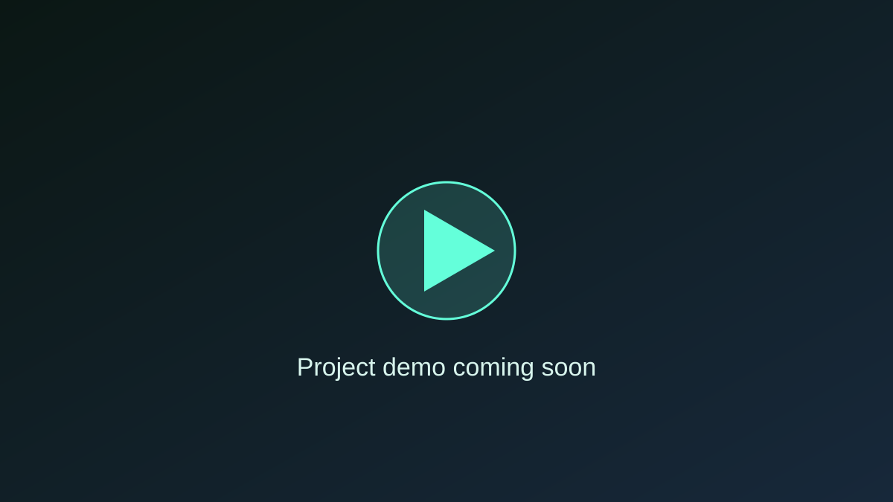

Credit Card Fraud Detection
Detects suspicious credit-card transactions from highly imbalanced transaction data.
MY WORK
A selection of AI, web and application-development projects built to solve practical problems.

Detects suspicious credit-card transactions from highly imbalanced transaction data.
Groups customers by behaviour to support more targeted business decisions.
Classifies text as positive, negative or neutral.
Predicts passenger survival from historical Titanic data.
Connects users with services through a simple on-demand workflow.
A deep-learning study of multimodal face-video generation.
MORE ON GITHUB